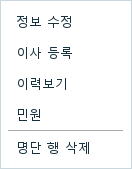
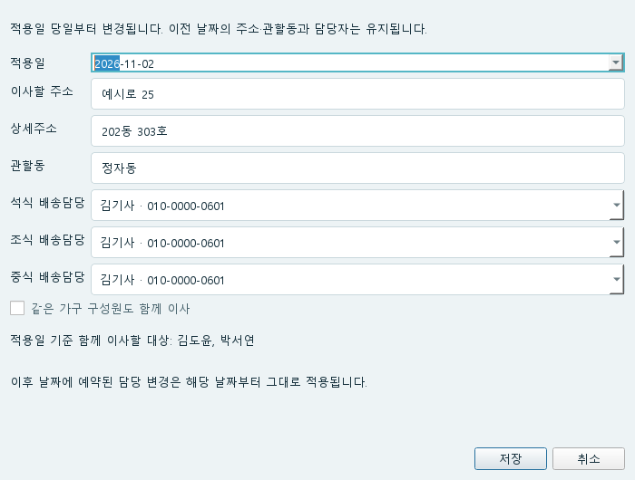
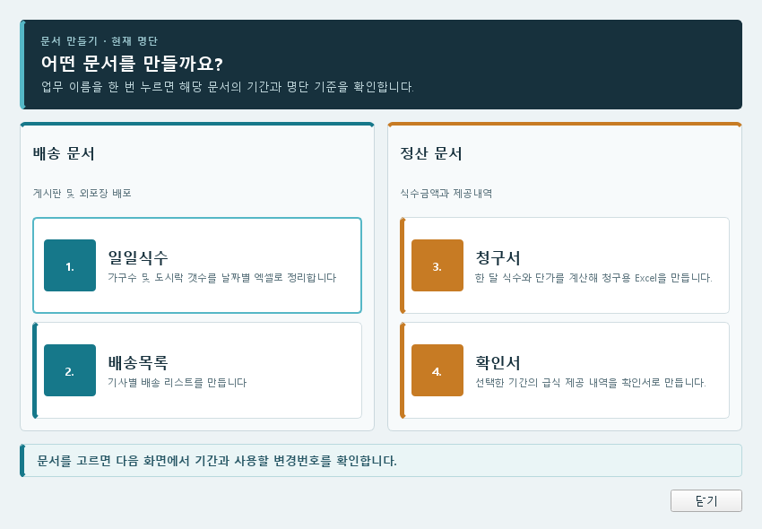
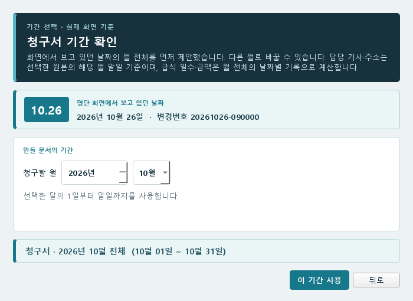
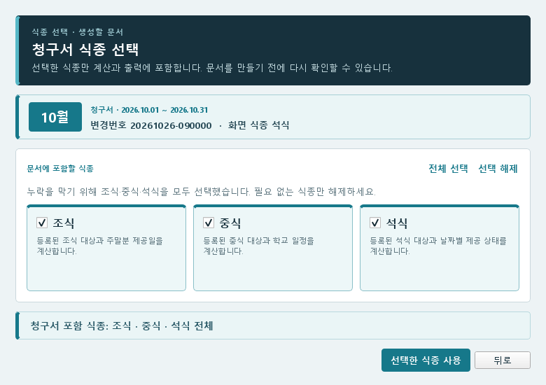
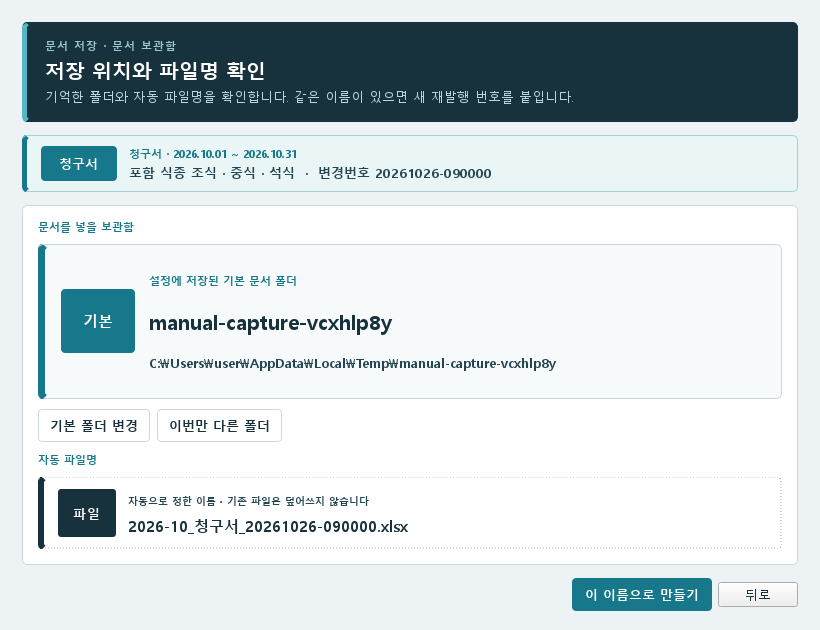
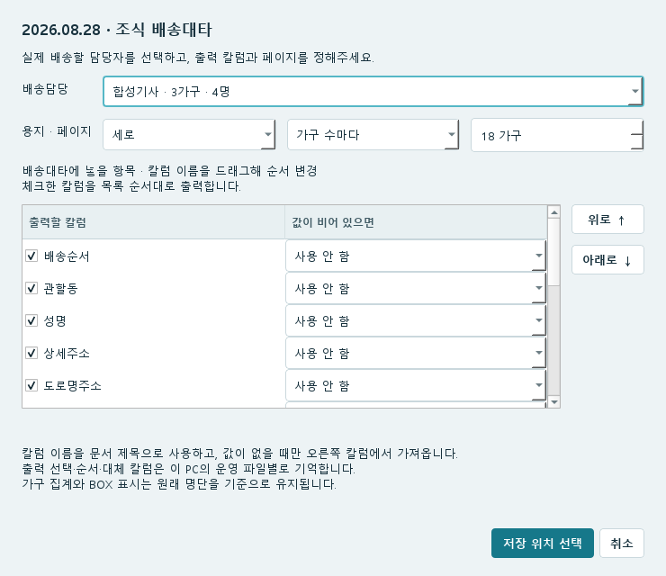
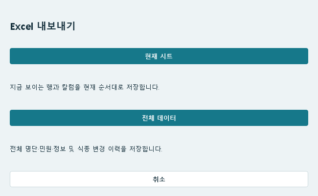

02 / 사용 방법
이사 등록·파일 생성
이사는 적용 날짜를 함께 저장합니다. 문서는 필요한 종류와 기간을 고른 뒤 Excel 파일로 만듭니다.
이사 날짜와 새 주소 등록
여는 위치 · 대상자의 도로명주소·상세주소·관할동 칸 우클릭 → 이사 등록




- 이사할 사람의 주소 칸에서 우클릭해 이사 등록을 엽니다.
- 적용일에 새 주소로 배송할 첫날을 입력합니다.
- 이사할 주소에는 도로명주소, 상세주소에는 동·호수 등을 입력합니다. 관할동도 확인합니다.
- 배송기사가 바뀌면 식종별 배송담당을 선택합니다.
- 같은 가구가 함께 이사하면 같은 가구 구성원도 함께 이사를 체크하고 표시된 이름을 확인합니다.
- 저장을 누릅니다. 명단의 조회 날짜를 적용일로 바꿔 주소와 배송담당을 확인합니다.
만들 파일 고르기
여는 위치 · 명단 오른쪽 위 → 문서 만들기


| 파일 | 용도·기간 |
|---|---|
| 1. 일일식수 | 가구수 및 도시락 갯수를 날짜별 엑셀로 정리합니다 |
| 2. 배송목록 | 기사별 배송 리스트를 만듭니다 |
| 3. 청구서 | 한 달 식수와 단가를 계산한 청구용 Excel |
| 4. 확인서 | 선택한 달의 급식 제공 내역을 담은 Excel |
청구서·확인서·일일식수 만들기
- 문서 만들기에서 파일 종류를 선택합니다. 청구서·확인서를 처음 만들 때 문서 양식이나 생성 Excel 비밀번호 설정창이 나오면 값을 정해 저장한 뒤 기간 선택으로 진행합니다. 일일식수는 비밀번호 설정 없이 진행합니다.
- 기간 확인에서 청구서·확인서는 연월, 일일식수는 시작일과 종료일을 정합니다. 확인 버튼을 눌러 다음 화면으로 갑니다.


- 파일에 넣을 식종을 체크하고 선택한 식종 사용을 누릅니다.
- 일일식수에 배송 형태 선택이 보이면 기본·별도 형태의 체크도 확인합니다. 해제한 형태는 식수와 가구 수에서 빠집니다.


- 저장 위치와 파일명을 확인합니다. 폴더가 정해져 있지 않으면 기본 폴더 선택을 누릅니다. 이번 파일만 다른 곳에 저장하려면 이번만 다른 폴더를 선택합니다.
- 이 이름으로 만들기를 누릅니다.
- 완료 안내가 나오면 생성된 파일을 열어 대상 월·식종·식수·주소를 확인합니다.


청구서·확인서는 설정된 생성 Excel 비밀번호로 엽니다. 일일식수는 비밀번호 없이 생성됩니다. 같은 이름의 문서가 있으면 새 재발행 번호가 붙습니다.
월중 가구 변경과 문서 기준일
청구서·확인서는 선택한 원본 변경번호의 해당 월 말일 가구 소속을 기준으로 가구를 묶습니다. 월중에 가구를 합치거나 다른 가구로 옮겼다가 돌아와도 문서를 만들 수 있습니다. 식수·금액·주차별 수량은 날짜별 제공 내역과 단가로 계산하며, 월말 가구로 묶는다고 지난 식수를 다시 계산하지 않습니다.
월말에 가구 소속이 없는 대상자는 문서에 포함된 식사일 중 소속이 확인되는 마지막 날짜의 가구를 사용합니다. 월말과 포함된 식사일 모두에 가구 소속이 없으면 해당 대상자의 기록을 확인하라는 안내가 나옵니다. 과거 문서를 다시 만들 때도 이전 변경번호 선택으로 고른 원본의 가구 기록을 사용합니다.
가구 변경 이력은 그대로 보관됩니다. 일일식수·배송목록은 날짜별 배송 가구를 계산하므로 월간 확인서의 가구 묶음과 다를 수 있습니다.
완성된 문서에서 확인할 내용
확인서는 월요일~일요일을 한 주로 나누고 기본으로 해당 월 날짜만 표시합니다. 다음 달 1일이 토요일 또는 일요일이면 문서 양식의 날짜 표시 옵션으로 마지막 주에 포함할 수 있습니다. 날짜 표시 옵션은 식수를 바꾸지 않습니다. 예를 들어 2026년 10월 첫 주는 1~4일입니다. 6주인 달은 양식의 5개 주차 칸에 맞춰 토요일 시작이면 마지막 두 주, 일요일 시작이면 처음 두 주를 합칩니다.
행복도시락 방학 청구서의 학기중 시트에는 조식·석식, 방중 시트에는 중식을 나누어 표시합니다. 여러 식종을 받는 사람은 해당 시트에 각각 나오며 두 시트의 합계는 총괄과 일치합니다.
확인서에서 1식짜리 가구를 먼저 배치하려면 설정 → 문서 → 문서 양식의 배치 옵션을 선택하고 문서를 새로 만드세요.
일일식수의 배송 형태와 비고 설정
- 일일식수의 식종 선택 화면에서 포함할 배송 형태를 체크합니다. 제외한 형태는 식수·가구 수에서 빠집니다.
- 추가 설정 → 비고 설정…을 엽니다.
- 비고에 추가할 칼럼에서 사용할 칼럼을 체크하고 이름을 드래그하거나 위로·아래로 옮겨 우선순위를 정합니다. 사람마다 값이 있는 첫 칼럼만 이름과 함께 표시하며 모두 빈칸이면 추가하지 않습니다.
- 기존 비고 위 또는 기존 비고 아래를 선택합니다. BOX 등 따로 표시할 배송 형태도 여러 개 선택할 수 있습니다.
- 제외한 배송도 표시를 켜면 포함 배송 형태에서 제외한 대상도 선택한 형태의 비고에는 표시합니다. 이 사람들을 식수·가구 수에 더하지는 않습니다.
- 적용 후 식종 선택을 확정하고 파일을 생성해 비고를 확인합니다.
행복도시락 일일식수는 요일과 관계없이 석식·조식을 기본 체크하며, 중식이 필요하면 추가로 체크합니다. 급식 일일식수와 배송목록의 기본 식종은 선택 날짜(기간이면 시작일)에 따라 월~목은 석식, 금요일은 조식으로 제안합니다. 필요한 식종으로 바꿀 수 있으므로 생성 전에 체크 상태를 확인하세요. 청구서·확인서는 모든 식종이 기본 선택입니다.
뒤로를 누르면 앞 단계로 돌아가 선택을 고칠 수 있습니다. 닫기나 Esc는 문서 만들기를 취소하며, 최종 확정 전에는 문서 파일을 만들지 않습니다.
배송목록 만들기
- 문서 만들기 → 배송목록을 선택합니다.
- 배송할 날짜를 정하고 식종 하나를 선택합니다.
- 배송담당에서 필요한 기사를 고릅니다.
- 배송대타에 넣을 항목에서 출력할 칼럼을 체크합니다. 칼럼 이름을 드래그해 순서를 바꿉니다.
- 용지 방향과 페이지 구분을 정합니다. 가구 수마다 나누거나 관할동별로 나눌 수 있습니다.
- 저장 위치 선택을 눌러 폴더·파일명을 확인하고 생성합니다.


빈 값 대신 다른 칼럼을 쓰려면 배송대타의 대체 칼럼 설정을 참고하세요.
각 칼럼의 값이 비어 있으면에서 대체 칼럼을 고르고, 옆에서 가로 정렬(왼쪽·가운데·오른쪽)과 세로 정렬(위·가운데·아래)을 정합니다. 기본은 왼쪽·아래이며 제목과 본문에 적용됩니다. 출력 순서는 칼럼 이름을 드래그해 바꿉니다.
지금 보이는 명단을 Excel로 저장
여는 위치 · 더보기 → 명단·파일 → Excel 내보내기


- 필요한 시트로 이동하고 검색·필터·칼럼 숨김을 맞춥니다.
- Excel 내보내기에서 현재 시트를 선택합니다.
- 저장 위치와 파일명을 정합니다. 내보낸 파일에서 보이는 행·칼럼과 순서를 확인합니다.
전체 명단과 이력까지 필요하면 전체 데이터를 선택합니다. 식수를 계산한 청구서나 배송표는 문서 만들기에서 생성하세요.
전체 데이터는 화면 검색·필터·숨긴 칼럼과 관계없이 전체 명단과 이력을 내보냅니다. 조회 기준일을 정한 뒤 파일 저장을 누르세요. 식종별 담당이 서로 다르면 식종별 명단과 한 사람 한 행의 통합 명단을 함께 만들고, 모두 같으면 통합 명단만 만듭니다. 이력은 별도 시트로 저장하며 생성 Excel 공통 비밀번호를 적용합니다. Excel 내보내기는 앱의 운영 파일 백업을 대신하지 않습니다.
행복도시락 일일식수
설정 → 문서 → 문서 양식에서 행복도시락을 선택하고 저장한 뒤 문서 만들기 → 일일식수를 엽니다. 기간·식종·배송 형태와 비고 옵션을 정하고 저장 위치를 선택합니다. 석식·조식은 기본으로 함께 체크되며, 중식은 필요할 때 추가로 체크하세요. 체크하지 않은 식종은 계산하지 않습니다.
기사·지역별 조식·석식 수량은 조식·석식 양식에, 중식 수량은 중식 양식에 작성합니다. 함께 선택하면 같은 통합 문서에 날짜별로 두 시트를 만들며 최근 날짜부터 표시합니다. 중식 시트 이름에는 중식_이 붙습니다.
조식·석식·중식 모두 선택일과 같은 주(월요일~일요일)의 식수를 표시합니다. 선택일에 식수가 있으면 그날 수량을 사용합니다. 없으면 같은 주의 가장 최근 앞선 배송일을, 앞선 배송도 없으면 같은 주의 첫 이후 배송일을 사용합니다. 예를 들어 기본 배송 설정에서 2026년 11월 3일 조식은 11월 6일 금요일 수량, 금요일 석식은 같은 주 목요일 수량을 표시합니다. 중식도 같은 기준입니다. 해당 주에 식수가 전혀 없으면 이전 주나 다음 주 수량을 가져오지 않고 0 대신 빈칸으로 둡니다.
참조한 조식·석식·중식은 실제 배송·청구 수량에 다시 더하지 않습니다. 금요일에 주말 조식을 함께 배송하면 3식씩 계산하며, 실제 배송량은 중지·일시중지·학교 일정·대체식 규칙을 적용합니다. 가구별 식수 분포는 DB의 가구 소속을 사용합니다. 기사 또는 지역 값이 없으면 미분류로 모입니다.
중식 시트는 중식 기사 순서, 조식·석식 시트는 석식이 있으면 석식 기사 순서, 조식만 있으면 조식 기사 순서를 사용합니다. 일일식수 기사 순서에서 바꿀 수 있습니다. 일일식수는 기존처럼 Excel 암호 없이 저장합니다.
기사별 조식·석식 또는 중식 소계와 맨 아래 전체 식수 합계를 표시합니다. 기존 행복도시락 양식의 열 너비·숨긴 보조 열·인쇄 범위를 유지합니다. 식수가 없는 칸과 그 합계에는 0을 표시하지 않습니다.
기사·지역·주소·비고를 바꾸려면 일일식수 항목 연결을 사용합니다. 이미 만든 Excel은 바뀌지 않으므로 새 파일을 만들어 확인하세요.
행복도시락의 배송목록은 급식과 같은 양식·생성 방식을 사용합니다. 업체별 양식은 따로 수정할 수 있습니다.